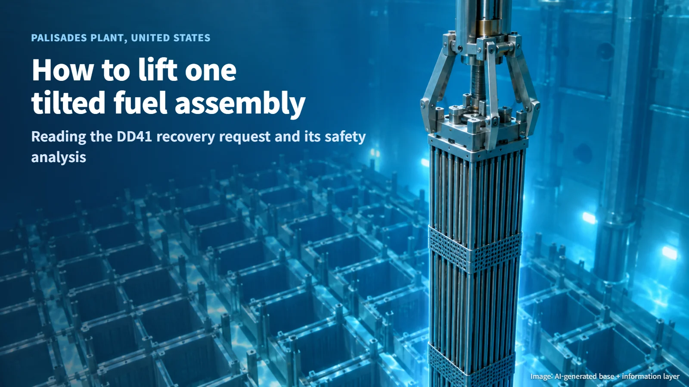
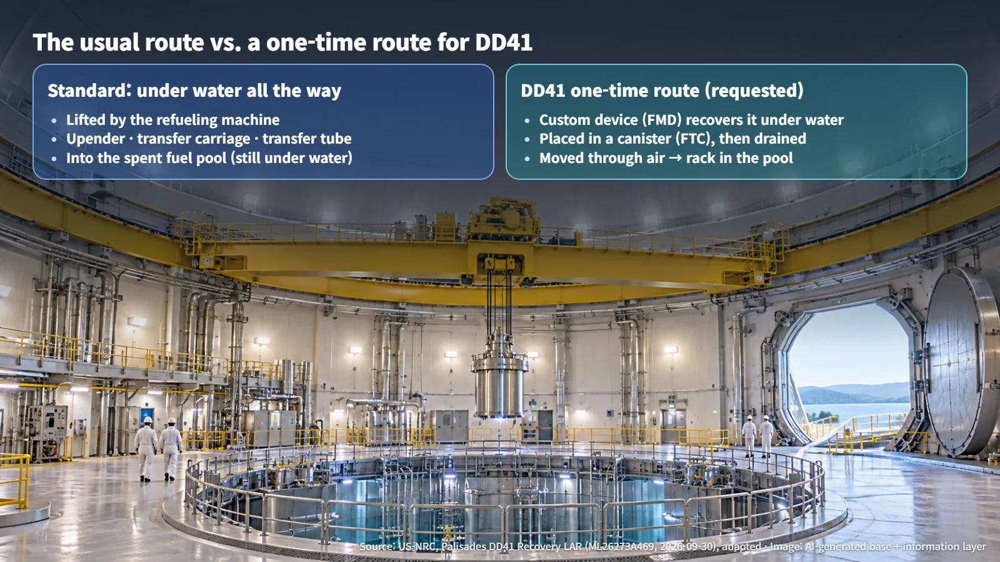
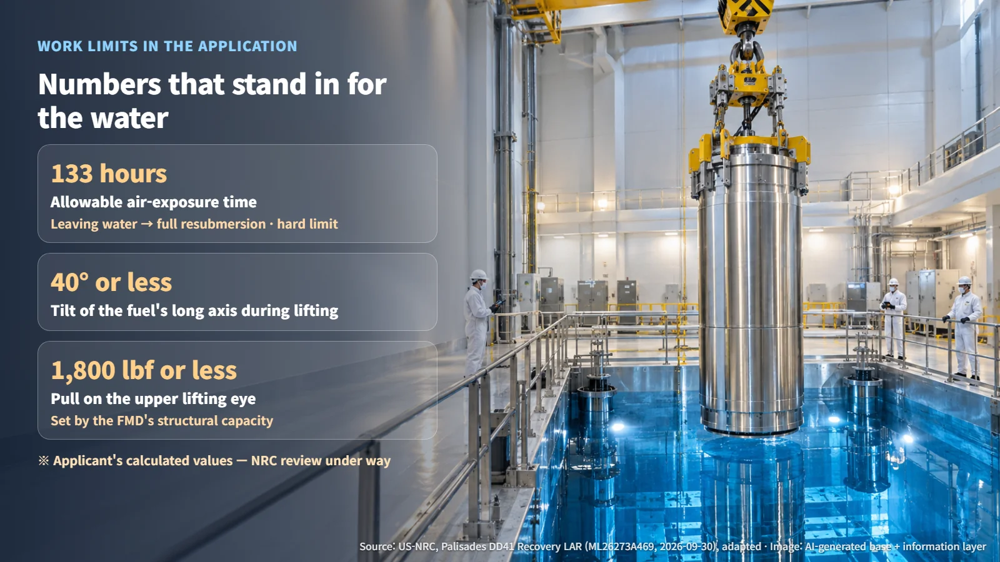
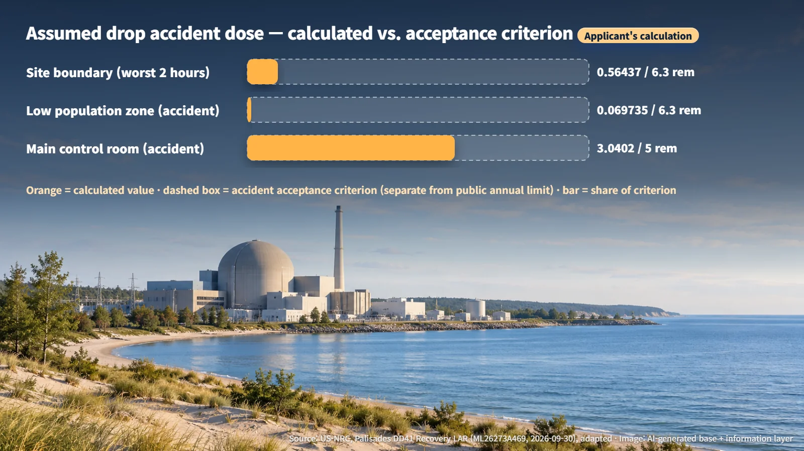

United States · Fuel Handling Safety
How to Lift One Tilted Fuel Assembly: The Palisades "DD41" Recovery and Its Safety Analysis
Palisades Energy has asked the NRC to approve a one-time method for lifting the damaged, tilted fuel assembly DD41 out of the core using a custom device and a dedicated canister.
News that fuel is "tilted" inside a nuclear plant tends to raise an immediate worry: is something dangerous going on? On October 6, 2026, the U.S. Nuclear Regulatory Commission (NRC) announced that it is reviewing a license amendment request to recover a tilted fuel assembly (a bundle of fuel rods held together as one unit) at the Palisades plant in the United States. The NRC said it has confirmed that the fuel rods in this assembly are intact. Confirming the condition of the fuel and approving the method used to move it are two separate steps. Let's walk through what has to change, and what has to be demonstrated, to lift a single fuel assembly out.

Normally, Fuel Moves Only Under Water
At Palisades, the standard method keeps fuel under water for the entire trip. The refueling machine (the crane-like device that grips and carries fuel) lifts an assembly and sends it through an upending device, a transfer carriage and a transfer tube into the spent fuel pool. Throughout that path, the water does three jobs at once: it cools the fuel, it shields radiation, and it holds back any radioactive material that escapes.
The request that Palisades Energy submitted on September 30 (PNP 2026-052) is a one-time change that applies to a single assembly, designated DD41. The top support plate of the assembly is damaged, so the existing lifting tool can no longer grip it. The operator therefore asked to change §§9.11 and 14.19 of the Updated Final Safety Analysis Report (UFSAR), the sections covering fuel handling equipment and accident analysis. The UFSAR is the reference document that records a plant's design and the accidents it is analyzed against.
Picture a single fuel bundle leaning at an angle deep under water, with the usual gripper unable to take hold of it: that is where this case begins.

What Stands In for the Water: Special Equipment and 133 Hours
The new method relies on two pieces of equipment. First, a custom Fuel Movement Device (FMD) wraps around and supports the assembly, secures both ends, and lifts it. The application analyzes an unfavorable case in which only 8 of the 12 lifting arms make contact, and it commits to keeping at least 10 ft (about 3 m) of water above the fuel during handling. Next, a dedicated Fuel Transfer Canister (FTC) receives DD41 under water. The canister is then drained, carried through the air by crane and the equipment hatch cart, and stood upright on a rack in the pool.
Along the stretch where the water is gone, the canister has to provide the cooling and shielding. According to the applicant's computational fluid dynamics analysis (CFD, a computer calculation of how heat flows), the upper bound on cladding temperature (the cladding is the metal tube that encloses the fuel) is 517°F, below the comparison criterion of 752°F. This figure is the applicant's own calculated value; field measurements and the NRC's evaluation of the result are still to come.
The allowable air-exposure time is 133 hours. The limit comes from working out, temperature by temperature, how fast oxygen in air oxidizes the fuel (uranium dioxide). The clock starts the moment the canister first leaves the water surface and stops when it is fully submerged again. It works as a hard upper limit, with the actual work planned to finish well inside it. During the lift, the tilt of the fuel's long axis is held to 40 degrees or less, and the pulling force on the upper lifting eye to 1,800 lbf (pounds-force) or less. That 1,800 lbf figure is set by the structural capacity of the FMD itself, rather than by the fuel.
Imagine a 133-hour clock counting down beside the canister once it emerges from the water, and the heart of this step becomes clear.

What If It Drops? Reading the Accident Dose Calculation
The calculation attached to the application assumes a fuel handling accident in which every fuel rod in one assembly is damaged. The release is drawn from that one assembly alone, rather than from the entire reactor core. The analysis leaves out the water's ability to trap radioactive material and models a release path through the open hatch, the fuel building ventilation and the exhaust stack. For switching the control room to emergency ventilation, it also includes a 20-minute delay in manual operator action.
The results are expressed as total effective dose equivalent (TEDE), which combines exposure from outside and inside the body, in rem (1 rem equals 10 mSv).
| Location | DD41 calculated value | Applicable criterion | |---|---|---| | Site boundary (worst 2 hours) | 0.56437 rem | 6.3 rem | | Low population zone (accident duration) | 0.069735 rem | 6.3 rem | | Main control room (accident duration) | 3.0402 rem | 5 rem |
(Source: US-NRC, Palisades Fuel Assembly DD41 Recovery License Amendment Request, adapted)
The criteria here are acceptance criteria applied to accidents; the annual dose limit for members of the public in everyday conditions is a separate, much lower figure. Even with the water's protective effect removed, the results come in below the existing design basis accident values (2.2, 0.28 and 4.04 rem). The main reason is that DD41 has cooled for longer, so it holds less radioactive material. The existing comparison assumed 2 days of cooling. The result therefore applies to DD41 and this specific path; freshly discharged fuel or a different route would each need their own analysis.

Application, NRC Approval, Job Done: Three Separate Gates
Under 10 CFR 50.59 (the review that decides whether an operator can make a change on its own judgment), the operator concluded that prior NRC approval was required, and it applied under 50.90 and 50.91. The October 2 date in the application is the approval date the operator requested; the NRC's actual decision is still pending. The operator proposed leaving the Technical Specifications (the legally binding operating limits for the plant) unchanged.
The operator asked for expedited handling because a delayed recovery would hold up the activities needed to return the plant to power operation. The reason given is schedule, and no immediate release of radioactive material or hazard to the public has been identified. The October 6 announcement reports that the review is under way. As of October 9, the follow-up approval documents and evidence that the work has been completed have not appeared in public records.
DD41 will stand on its rack in the pool only after passing through three gates in turn: the calculations in the application, approval by the NRC, and completion of the work on site. The next time you see a headline about a "fuel problem" at a nuclear plant, start by asking which gate the story is standing at. That one question will size the concern far more accurately.